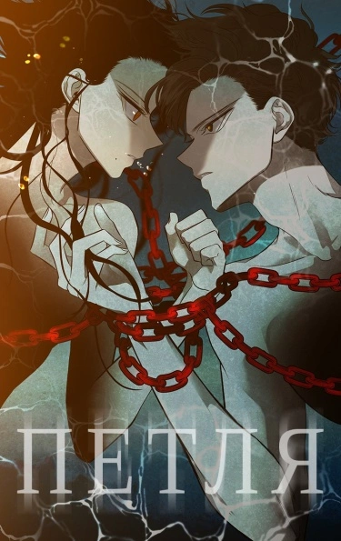

Что такое манхва?
Манхва — это корейские комиксы, которые отличаются стилем рисовки и сюжетом от японских манги. Они могут быть как черно-белыми, так и цветными, и часто публикуются в формате веб-комиксов.
В последние годы манхвы стали популярны благодаря доступности онлайн-платформ, разнообразию жанров и уникальным сюжетам, которые привлекают читателей со всего мира.
15 популярных тайтлов за последнее время
Поднятие уровня в одиночку
Solo Leveling
Краткое описание тайтла
10 лет назад раскрылись врата в другой мир, где людям дозволено убивать монстров. Так появились охотники, преследующие и уничтожающие тварей. Но не каждому из них суждено повысить свой уровень и стать сильнее. Сон Джин Ву был охотником низшего E-ранга, у которого не было ни единого шанса продвинуться по ранговой лестнице, пока однажды он случайно не очутился в подземелье D-ранга. Чуть не погибнув от рук сильнейших чудовищ, Джин Ву открывает секрет повышения уровня, известный только ему одному. Теперь даже самый слабый может стать сильнейшим.
Читают потому что:- В книге есть элементы, вдохновлённые компьютерными играми. По сюжету ранобэ люди должны обладать прокаченными магическими навыками, чтобы стать сильными бойцами и сражаться против монстров.
- В ранобэ дерзко сталкиваются магия и реальность. Современная Южная Корея пестрит порталами, которые ведут в убежища кровожадных монстров. Они нападают на простых жителей, поэтому некоторые люди решают объединиться и вместе защищать страну.
- Динамичная новелла легко читается, а реалистичные иллюстрации добавляют эмоциональности.
- Азиатская история показывает, что для подвигов совсем не обязательно уметь драться. Главное — это храбрость и готовность сражаться до конца за то, что действительно важно.
Ветролом
Wind Breaker
Краткое описание тайтла
Ветролом — драма о юных уличных гонщиках, мечтающих о свободе. Главный герой — Джа Хён — сын успешных родителей и лучший ученик в своей школе, он никогда не знал, что значит «бороться за свою мечту», ведь вся его жизнь определялась родителями, которые хотят для сына только одного — успешного окончания школы. Но однажды Джа Хён, с детства любящий велоспорт, оказывается втянут в деятельность местных гонщиков, что заставляет героя пересмотреть приоритеты родителей и прислушаться к себе, ведь на своем новом пути он обретает друзей, любовь и приключения!
Читают потому что:- Интересный сюжет
- Рисовка. Красивые персонажи. Каждый герой индивидуальный
- Можно знатно посмеяться.
- Узнать много нового про велогоночный спорт. Начать разбираться в велеках
Истинное Образование
True Education
Краткое описание тайтла
В 2011 году приняли закон, который запрещал применять телесные наказания к ученикам младших и средних классов, после чего учителям стало очень тяжело контролировать учеников. Даже если ученики нарушали распорядок школы и делали недопустимые вещи, учителя никак не могли им помешать. Так же студенты начали использовать в своих целях, что бы подставлять учителей и в результате одного из таких инцидентов скончался преподаватель. Министерство образования видя разрастающуюся проблему быстро приняло меры и издало закон о защите учителей. В сюжете появляется первогодка, который каждый день подвергается издевательствам со стороны других школьников, но жалобы на хулиганов никак не помогают, ведь учителя ничего не могу им сделать, но случается судьбоносный момент, ведь к ним в школу приходит новый преподаватель, который скоро перевернет здесь всё вверх дном.
Читают потому что:- Захватывающий сюжет с яркими персонажами.
- Можно узнать как разобраться в конфликте
- Узнать новые приёмы в драке. Как победить 7 человек, когда ты один.
- Как держать себя в спортивной форме.
Я стал графским ублюдком
Trash of the Count's Family
Краткое описание тайтла
Странно когда ты открываешь глаза и оказываешься в другом измерении, в каком-то другом мире. Так и я оказался внутри романа, который полон страшных и таинственных историй, очень непонятных, но интересных. Главным героем этого романа был парень по имени Чхве Хан, его перебросило в какой-то другой мир, где родилось очень много новых героев континента. Я воплотился в того самого графа отброса, семья которого держит в страхе первую деревню. Но проблема далеко не в этом, наш персонаж искажается когда деревню разрушили из-за не известных обстоятельств. Хуже всего, что я не знаю что произошло здесь и по своей не аккуратности я связываюсь с ублюдками которые меня избивают до полусмерти. Во мне что-то изменилось...
Читают потому что:- Манхва выделяется среди других произведений жанра "исекай" благодаря своему уникальному подходу к развитию персонажей и интересной динамике сюжета.
- Яркие персонажи, рисовка, милая живность.
- Много юмора.
- Самое главное в манхве - это сообразительный герой.
Всеведущий читатель
Omniscient Reader
Краткое описание тайтла
Главный герой на протяжении десяти лет следит за сюжетом новеллы, которая не пользуется популярностью, но парень считает прочитанное шедевром. Когда он переворачивает последнюю страницу, то оказывается в параллельном мире. И хотя заранее знает о том, что произойдёт, не собирается расслабляться и правильно делает. Поскольку ситуация развивается совершенно иначе и персонажу предстоит найти способ продолжить существование. В новой вселенной героя принимают за токкэби - мифические существо. В данном образе ему предстоит сражаться за собственную жизнь.
Читают потому что:- Рисовка. Шикарный сюжет. Главный герой истории. Персонажи. Юмор. Общая концепция.
- Умный гг
- Не знаете, что делать есть попадете в новуллу, то скорее начинайте читать эту манхву, вам объяснит гг, что делать в таком случае.
- Научитель понимать природу мифических существ.
Милый дом
Sweet Home
Краткое описание тайтла
Много ли для счастья надо хикикомори? Знай себе в четырёх стенах сиди, остальных нахрен посылай и в один комп вникай. А что родители с сестрёнкой внезапно померли? Так и чёрт с ними, оставили после себя «копейки»: пришлось в дешёвую общагу переехать, жить на фастфуде и даже день Х назначить, чтоб delete-нуться из этого мира. Только не знал наш герой, что не суждено ему сдохнуть человеческими методами, ибо, как говорится, «ночь темна и полна ужасов», а днём и тем паче — не забалуешь.
Читают потому что:- Бро хотел умереть, но потом понял, что смерть не выход из любой ситуации.
- Потрясающий хоррор, сюжет конфетка.
- Хорошая рисовка, можно прочитать за день произведение.
- Есть дорама, сюжет 100 попадание.
Борьба в прямом эфире
Viral Hit
Краткое описание тайтла
Ю Хобин — ничем не выделяющийся школьник, над которым постоянно издеваются его одноклассники-отморозки, чувствующие своё превосходство над ним. Парню ничего не остаётся, кроме как и дальше игнорировать их, потому что его жизнь и без того полна трудностей. Однако один непредвиденный инцидент полностью переворачивает его жизнь. Он становится знаменитым благодаря случайно загруженному и ставшему хайповым видео! Деньги и популярность — что может быть лучше?! Но, так как всё вышло случайно, повторить успех первого ролика будет уже не так просто. Искушённый запахом денег, которые можно на этом поднять, и его внезапным всплеском популярности, он планирует делать более увлекательный контент, который будет интересен людям и поможет ему собрать больше подписчиков... Но, чтобы достичь этого, Хобину предстоит научиться сражаться, и именно с этого момента начинается история его канала «HOW TO FIGHT»!
Читают потому что:- Вас буллят, не знаете, что делать? выход есть ГГ показал на своем опыте. Так ещё и стал популярным.
- Можно научиться драться, ток для самообороны.
- Сюжет, рисовка и многое другое вы можете найти в этом тайтле.
Единственный исход злодейки — смерть
Villains Are Destined to Die
Краткое описание тайтла
Я перевоплотилась в злодейку, единственную дочь семьи Экхарт. Но самое ужасное — что бы я ни делала, всё приводит меня только к смерти! Я должна сблизиться с кем-то из мужчин гарема героини, прежде чем появится «настоящая дочь» семьи Экхарт! Два старших брата, которые всегда ссорятся со мной по любому пустяку. Безумный наследный принц, благодаря которому моя жизнь заканчивается смертью.
Читают потому что:- Рисовка. На любителя, но многим нравится.
- ЖГГ сигма. С этого можно посмеяться.
- Сюжет. Есть ранобэ, можете глянуть посмотреть.
- Ценность семьи. Вы поймете настолько важно чтобы вас понимала семья.
Однажды я стала принцессой
Who Made me a Princess
Краткое описание тайтла
Любительница чтения книг перерождается в персонажа любимого произведения под названием "Прекрасная принцесса" и зная свою дальнейшую несчастную судьбу пытается найти возможность избежать смерти. Когда умирает мать, девочка оказывается на попечение отца-императора, которому она не нужна. Дальнейшая участь принцессы по имени Анастасия весьма печальна - по ложному обвинению она казнена. Однако зная сюжет, главная героиня пытается как можно реже встречаться с правителем, а когда понимает что это не возможно, хочет найти к нему подход, что весьма сложно сделать. Кроме того, у неё есть конкуренты - сводная сестра Джаннет также стремится добиться подобной цели.
Читают потому что:- Сюжет. Старые фанвты перечитывают данный тайтл только из-за "штор" Клода.
- Миленько, ванильно. Девочкам понравится
- Сюжет на самом деле интересный.
- Персонажи яркие.
Свинарник
Pigpen
Краткое описание тайтла
Расслабляющий отдых в раю или смертельная ловушка? Главный герой просыпается на захватывающем дух пляже, но понятия не имеет, кто он и как сюда попал. Как бы он ни пытался собрать всё воедино, распутать эту головокружительную тайну будет нелегко, когда каждая подсказка ведёт к ещё более безумным вопросам... и семья, которая приветствует его в своем доме, не такая, какой кажется.
Читают потому что:- Сюжет. Автор гений!! до сих пор в шоке от поворота событий.
- Рисовка. Стиль хоррор.
- Рейтинг положительный.
Как защитить старшего брата главной героини
Roxana
Краткое описание тайтла
По какой-то неведомой и загадочной причине мне посчастливилось переродиться в художественном произведении, где был обратный гарем, да и рейтинг был 19+. Но удивилась больше я о того, что стала любимой сестренкой одного из главных злодеев данной новеллы, который отличался жестокостью, дерзостью и беспощадностью.
Теперь же мне действительно необходимо дожидаться того самого момента, когда явиться главная героиня для того, чтобы жестоко отомстить? Ах, как же на самом деле тяжело избежать концовки, в которой ты умрешь (скорее всего). Действительно ли меня постигнет смерть или же начну жить спокойной и счастливой жизнью?
- Много эдитов можно найти на просторах интернета, огромный фандом который заставляет тебя прочитать это произведение.
- Рисока. одна рисовка говорит о кажестве работы.
- Раскрывается понятие семьи.
- Как правильно добиться своей цели.
Прирожденный наёмник
Mercenary Enrollment
Краткое описание тайтла
Главный герой по имени Юй однажды попал в жуткую и пугающую авиакатастрофу, в результате которой он смог выжить. А вот другим пассажирам, которые находились в тот момент на борту, выжить, к сожалению, не удалось. В скором времени после данного происшествия главный герой вступает в ряды наемников для того, чтобы стать сильнее, выносливее и смелее. В рядах наемников Юй служит более десяти лет, после истечения которых принимает решение вернуться к своей любимой семье в родной город. Но сможет ли главный герой вернуться к той жизни, которую не видел более десяти лет? Примет ли его семья?
Читают потому что:- Браток, снайпер. Научит оберегать свою семью, ведь семья одна и нужно её ценить.
- Сюжет топ. ГГ знает каждого и каждый знает его, объяснит как обезвредить бомбу и много крассых лайфаков.
- Рисовка. Очень круто рисуют взыры машин и конечно персонажей.
Лукизм
Lookism
Краткое описание тайтла
Пак Хён Сок — непривлекательный парень с избыточным весом, подвергающийся школьной травле. Он знает всё о беспомощности, страхе и несправедливости. Но однажды, решив начать новую жизнь, он вдруг обретает и новое тело. Как же поведёт себя извечный неудачник, получив небывалые силу и красоту, и впервые столкнувшись с восхищением окружающих? Докопается ли он до секретов внезапного преображения? И построит ли по-настоящему нового себя?..
Читают потому что:- Не знаете как похудеть? ГГ рассказал как обрести новое тело.
- Это не сюжетно: жирный корейский мальчик, вдруг, получает возможность жить сразу в двух телах. В своём “классическом” и в “красивом”. Пока одно спит, другое тело бодрствует. И тогда он может увидеть жизнь с другой стороны.
- Объяснит почему рпп это плохо.
Мальчик с ружьём
Shotgun Boy
Краткое описание тайтла
Быть неудачником - клеймо,
И дали б чёртово ружьё,
Ты б застрелил всех подлецов,
Всех мразей, трусов, гордецов...
Но ты - слабак, а ночь темна,
И монстрами окружена
И взяв ружьё - в чём выбор твой?
Быть слабым или как герой?.. (с)RSC
- Сильный ты или слабый, не узнаешь пока не попробуешь...
- Ранее я рассказывала о манхве "Милый дом". Так вот, это дополнение к той истории. Здесь рассказывается о том, откуда взялись монстры, до начала основной истории. А также есть глава в конце, уже после окончания манхвы "Милый дом". Поэтому, я бы советовала сначала читать "Милый дом", а потом" Мальчик с ружьём".
- Вообще, история обоих героев схожа. Здесь также показывают, как над школьником издевается одноклассник. Из-за чего у него всё чаще появляются мрачные мысли и желания. Но всё меняется, когда его и других школьников атакуют монстры.
Петля
Olgami
Краткое описание тайтла
Молодая девушка по имени Хан Чэ А пережила много страшных вещей за свою юную жизнь. Если вы думаете, что вам в чем-то не везёт, то вам стоит прочесть данную историю и тогда, вы поймете настолько прекрасная жизнь. Так вот, эта девушка слишком рана потеряла своих любимых родителей, а сестра во всех земных грехах обвиняла ее, даже когда та не знала о чем идет речь. Во всех историях она была козлом отпущения. Молодая и красивая, а уже отмотала срок за решёткой. После такого что может быть хуже, но оказывается есть... Однажды мужчина по имени Пак Юн, делает ей предложение на одну очень странную сделку…
Читают потому что:- Комбинация романтики и мести.
- Есть вампиры.
- Внешность героев отдельный вид искусства.
Новинки 2024 года
В 2024 году покаряют фанатов манхв новые захватывающие тайтлы, такие как...
Слезы на увядших цветах
Tears on withered flowers
Коротко о тайтле
История о молодой женщине, решившей поставить на себе крест из-за предательства. Однако у судьбы на неё свои планы.
«Слёзы на увядших цветах» – вебтун издательства Naver, одна из самых ярких новинок 2024 года. Автор этой онлайн-манхвы и иллюстраций к ней творит под псевдонимом Gae.
Во власти луны
Moonstruck
Коротко о тайтле
Рассказывает историю о древних вампирах Луне и Ноксе, которые устали от бесконечной жизни.
В стремлении найти освобождение они затеяли жестокую игру: соблазнять влюблённых в день их свадьбы, проверяя силу их чувств. Но смогут ли они сами найти ту любовь, что положит конец их бессмертию?
Эта история о возлюбленных, которые на протяжении веков боролись с временем и судьбой, стремясь обрести не только спасение, но и настоящую, вечную любовь.
Убийца Педро
Killer Pedro
Коротко о тайтле
В свои преклонные годы, опытный и хладнокровный убийца оказался предан своими соратниками. Но рок к нему явился с неожиданным подарком - он омолодился! Однако с этим новым обликом появилась непредвиденная проблема - никто не узнает его! Вроде бы это могло бы сыграть на руку, но герою поставлена перед лицом сложная дилемма - как использовать эту возможность и завладеть всемирной известностью, сохраняя при этом свою силу и власть?
Его недоверчивость приводит к полному переосмыслению своей мотивации. Он осознает, что теперь, будучи никем, он имеет уникальный шанс провернуть самую смелую операцию, которая перевернет мир наизнанку. Жаждой мести и жестокости он решает сотворить что-то грандиозное, заявив о своем существовании. Старый киллер, теперь помолодевший и скрывающий свою истинную личность, заключает в себе безграничный потенциал и возможности. "Тогда я самый сильный!" - шепчет он себе во внутреннем ироничном крике, готовясь к неизбежной битве на выживание в мире, где ничто не является таким, каким кажется.
Фальшивый охотник из другого мира
The Hunter of the Other World Who Is Being Misunderstood
Коротко о тайтле
Я храню великую тайну: мое истинное происхождение скрыто далеко за пределами Земли, на планете, обитатели которой достигли невиданных высот в развитии. В моем мире я занимаю высокое положение, что обязывает меня трудиться день и ночь без перерыва, а любые мысли о побеге кажутся абсолютно абсурдными. Тем не менее, через серию испытаний и ошибок, мне удалось совершить невозможное. Мой дух перебрался в сосуд, принадлежащий к совершенно иной форме жизни.
Теперь передо мной стоит новая задача. Судьба оказалась ироничной: новое мое тело оказалось значительно слабее моего настоящего "я", его физические показатели напоминают охотника самого низкого, F уровня. Возникает вопрос, насколько эффективно мне удастся адаптироваться к этим новым обстоятельствам. Успею ли я сохранить в секрете свою подлинную сущность и при этом выжить в мире, где физическая сила ценится превыше всего? Этот путь обещает быть исключительно трудным, но интерес к новым испытаниям в моем сердце горит ярче, чем когда-либо.
Дворянин
Scion
Коротко о тайтле
Молодой Марко ведет скромную жизнь на Филиппинах, всеми силами стараясь поддержать свою больную мать. Его повседневность разделяется между заботой о матери и попытками найти удачу в игорных заведениях. Но когда состояние матери ухудшается, Марко осознает, что необходима операция, которую он никак не может себе позволить. Перед Марко встает сложное решение – отправиться в Республику Корею, чтобы наконец встретиться с отцом, который оставил его много лет назад и который может стать последней надеждой на спасение жизни его матери.
Решившись на этот шаг, Марко отправляется в неизвестное, полный надежд, что встреча изменит их с матью судьбу. Но путь в поисках отца оборачивается серией неожиданных испытаний. Встреча с загадочным незнакомцем добавляет неопределенности в уже непростое путешествие Марко. Этот таинственный преследователь, словно тень, следует за парнем, будто бы скрывая какие-то секреты или, возможно, открывая дверь в совершенно другую реальность, которая изменит взгляд Марко на мир.
Сайты для чтения
В последние годы манхвы стали популярны благодаря доступности онлайн-платформ, разнообразию жанров и уникальным сюжетам, которые привлекают читателей со всего мира.
Топ 3 сайта, которые любят пользователи.
Mangabuff
ссылка на сайт mangabuff
Плюсы сайта:- Самые быстрые переводы, слив манхв.
- Админы и модераторы поддерживают дружную обстановку на сайте.
- При чтении падают карты, можно обмениваться с другими пользователями. Собирать коллекции.
- Каждая карта стоит разную ценну, при обмене можно понять как "живет рынок"
- Есть общий чат, где можно общаться с другими пользователями, найти друзей.
- Сайт может подтормаживать.
- Без pro аккаунта может быть рекалама, но она не заметная.
- Могут затянуть карточки и будете туда донатить.
Mangalib
ссылка на сайт mangalib
Плюсы сайта:- Нет рекламы при чтении.
- Есть возможность скачать главы и читать оффлайн.
- Есть мобильное приложение.
- Главы быстро загружаются.
- Перевод манхв может не выходть годами.
Remanga
ссылка на сайт remanga
Плюсы сайта:- Лицензированный сайт.
- Хороший скан глав
- Главы хорошо прогружаются.
- Платный перевод, до конкретного времени.